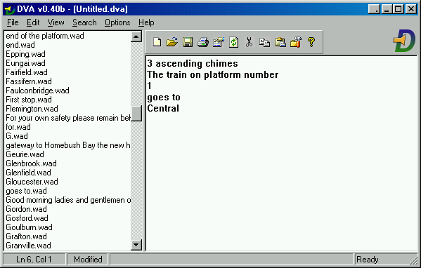
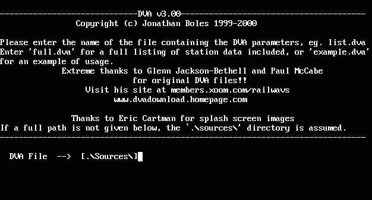

Version History
5.5.7
- Updated: Native ARM64 application on Apple Silicon M1/M2 Macs. If auto-updating on Apple Silicon, the next version update will be the native version, or get it now by deleting/redownloading DVA.
- Updated: CI pipeline for build/release.
5.5.6
- Added: Proper auto-detection of 16:10 or 16:9 widescreen.
- Added: Refresh button to modify indicators while being displayed.
- Added: Recurring departure mode.
- Added: Indicator style for Sydney Bus Museum.
- Fixed: Clearing of custom announcement in indicators departure panels.
5.5.5
- Fixed: Error processing GTFS data in some cases.
- Fixed: App is now correctly signed for Apple Gatekeeper.
5.5.4
- Fixed: Recover from incomplete timetable data
- Added: Olympic Park LED screen
- Updated: App is signed by developer and notarized by Apple to avoid Mac OS warnings.
5.5.3
- Added: Approximate Wirragulla sound
- Fixed: Corrected timetable indicators display: Newcastle Intg, Syd Central, Central (i).
- Fixed: Substitute Newcastle Interchange to 'Newcastle' when not available
- Updated: Trimmed JRE to the minimum required to run, to reduce update download size
5.5.2
- Added: Latest style of indicator screen
- Updated: Preview of indicator styles in selection list
- Updated: Improved performance of drawing indicators
- Updated: Supports Raspberry Pi (and other Linux ARM64 machines)
5.5.1
- Fixed: Missing sound due to FFmpeg depending on missing library.
5.5.0
- Updated: Refreshed UI with light/dark themes and new splash screen.
- Updated: Switched from Xuggle to FFmpeg for managing of sound files, to ensure long term viability of the project. Xuggle has not been updated in a long time and is not being maintained.
- Updated: Reverted to version 11 of the JVM from version 15, as 11 is the LTS ('long-term stable') version.
- Updated: Major restructuring of program code and resources.
- Updated: Update dependencies and removing old code.
- Updated: Ported many development shell scripts into Ant targets.
5.4.4
- Added: Realtime trip updates (delays and rescheduling) from TfNSW are applied to indicators.
- Updated: Higher performance by switching logging frameworks.
- Fixed: Enabled state of timetable filter comboboxes on intial load.
5.4.3
- Added: Uses up-to-date timetable data in GTFS format from TfNSW's Open Data Hub. Timetables will be downloaded on first launch and re-downloaded every two weeks. Note: this feature is experimental and there may be errors.
- Fixed: Minor UI improvements.
5.4.2
- Fixed: Fixed broken auto-update. Note: Users of versions 5.4.0 or 5.4.1 will need to manually update.
- Updated: Update JRE to OpenJDK 15.
5.4.1
- Updated: Improved layout of indicators page to be more functional.
- Updated: Updates and sounds files downloaded over HTTPS.
- Updated: Improved compression of updates for smaller downloads.
5.4.0
- Updated: No longer attempt to detect/install/use Oracle JRE (Java Runtime Environment). DVA now uses a modern OpenJDK's JRE.
- Updated: Remove some third-party libraries that were needed to support old Oracle JRE versions.
- Fixed: Bug in CityRail V2 indicator showing the wrong 2nd next train.
5.3.22
- Fixed: Detection of existing Java when installing on Windows.
- Fixed: Crash/hang at 'Analysing Timetables' step on startup.
5.3.21
- Updated: Replace V4 indicator font with a free alternative.
5.3.20
- Fixed: 'Unsupported protocol' error when auto-downloading Java.
- Fixed: Changed from ISXDL to Inno Downloader Plugin to support HTTPS.
5.3.19
- Added: Command-line options to play an announcement or export it as an MP3 file.
5.3.18
- Updated: Enable crash and exception reporting via Windows Azure Cloud.
5.3.17
- Fixed: Crash when no route continuation found in the schedule.
- Fixed: Sound library not updated when new sounds were added.
- Updated: Crash reporting via Windows Azure Cloud instead of to HTTP server endpoint.
5.3.16
- Fixed: Trains that go via the Airport should be announced as "via Airport Stations" (Github #11)
5.3.15
- Fixed: Work-around failure to launch Java on some Mac OS Sierra (10.12) systems.
5.3.14
- Fixed: #4 (V4 indicator shows 0 min instead of time text dissapearing).
- Fixed: #1 (T1 Western Line not supporting trains beyond Chatswood).
5.3.13
- Fixed: Incorrect Linux package metadata.
5.3.12
- Fixed: Antialiasing / high quality rendering not working.
- Fixed: "via Macquarie Park" corrected to be "via Macquarie University".
- Fixed: "Homebush" (Inner West) services should be "Homebush via Strathfield".
- Fixed: Add "T" icon to V4 Intercity indicators.
5.3.11
- Added: Enable running DVA on Windows XP and Windows Vista.
- Fixed: Incorrect indicator/announcement when using timetable mode.
5.3.10
- Fixed: Crash in indicator rendering code after the last train departs
5.3.9
- Fixed: Mislabeled version history
- Fixed: Build failure on Windows
5.3.8
- Added: CityRail V4 platform/concourse indicator
5.3.7
- Fixed: blank-screen bug in V4 indicator
5.3.6
- Fixed: multiple bugs in V4 and other indicators
5.3.5
- Added: V4 indicators
- Fixed: Wrong due-out time shown in V3 indicators when more than 1 hour.
5.3.4
- Added: Building of a Linux installer (.deb)
- Fixed: Fonts when running on Linux
- Updated: Stamping the Windows/Linux installers and Mac app package with the application version number.
5.3.3
- Fixed: Java auto-installation on Windows uses the most up-to-date version at the time DVA is released.
- Update: Buildable from source on Mac and Windows, instructions in building.html
5.3.2
- Added: Download up-to-date timetables from www.sydneytrains.info.
- Fixed: Terminating trains are now correctly announced as such.
- Update: Code cleanup and convert Eclipse project to IDEA.
5.3.1
- Fixed: Hidden errors due to demo data not being populated properly on first run.
- Fixed: The mini preview in the Windows screen saver settings dialog box now works.
- Fixed: Sound jar updater running asynchronously in the background, resulting in un-populated sound list.
- Fixed: Fixed substitutions in substitutions.txt not being applied if the casing was different.
- Fixed: Other minor bug fixes.
5.3.0
- Update: Improved updater. The sound library files are not packaged along with each updated, and are instead re-downloaded only when they change. This will reduce the size of updates from ~130MB to ~25MB.
5.2.9
- Fixed: Dock icon and application name when running under Java 1.8+ on Macs.
- Fixed: Improved Java Runtime Environment detection on Macs. Apple Java 1.6 is favoured, if present, due to broken font antialiasing in Oracle's Java 1.8. The Java version used is now shown with the application version.
- Fixed: Bug fixes in the updater.
5.2.8
- Added: Some Sydney A-set sounds.
- Added: Validation of the destination text fields on the Indicators page, similar to that which already takes place on the DVA page.
- Added: Icon in sound list indicates which sounds have come from a fallback library instead of the selected library.
- Updated: Faster startup by caching application data.
- Updated: Updater supports downloading from Windows Azure for future software updates.
5.2.7
- Added: Sydney DVA sounds for SWRL stations.
- Added: Validation of the stations lists on the Indicators page, similar to that which already takes place on the DVA page.
- Added: Menu items to edit configuration files for the Indicators.
- Updated: DVA will now install and use a 64-bit Java Runtime Environment on 64-bit Windows.
- Updated: Further optimised the Indicator rendering code.
- Fixed: 'The next train to arrive on platform' once again is played in generated announcements when minutes to departure > 0.
- Fixed: Incorrect scrolling or fixed station list when the number of stations is close to just fitting on the screen.
- Fixed: Misnamed Sydney 'High Street' and 'Coalcliff' sounds.
5.2.6
- Added: Manually play next train announcement on Indicators page.
- Added: For added realism, auto-generated announcements now have "X via Y" and "all stations to Z" phrasing. Additional stations can be configured by editing the text files 'vias.txt' and 'allStationsTos.txt' in the application folder.
- Added: Moved substitution list into a separate text file. Additional substitutions can be configured by editing the text file 'substitutions.txt' in the application folder.
- Added: Sydney DVA sound for Shellharbour Junction.
- Updated: More responsive performance when previewing sounds.
- Updated: Busy indication when preparing an announcement to play takes a long time.
- Fixed: Misnamed Sydney 'Turrella', 'Victoria Street' and 'High Street' sounds.
5.2.5
- Added: Sydney DVA sounds for ECRL.
- Fixed: Sound playing code crashing or failing to play in sometimes.
- Fixed: Program hang when stopping a playing announcement.
- Fixed: Cut/copy/paste now works.
- Fixed: Undo/redo now works in all text components.
- Updated: Code cleanup and refactoring.
5.2.4
- Added: Automatic substitution where there are small differences between the timetable and the voice library, that was causing certain automatically-generated announcements to not play. Examples: 'Domestic' vs 'Domestic Airport' vs 'Domestic Terminal', 'Kembla Grange' vs 'Kembla Grange Racecourse'.
- Added: Custom announcements can be used with the indicators instead of the auto-generated ones.
- Added: Added Sydney Terminal country platforms style of announcements.
- Updated: Improved reliability of the automatic update mechanism.
- Updated: Per user suggestion for realism, 'due out' decrements and trains change over at the 40 second mark each minute.
- Fixed: Improved scrolling appearance. The scrolling speed is more realistic, and the rounding logic applied to text positioning in the scrolling list has been updated to remove the ugly 'wriggling'/'bumping' effect '.
- Fixed: Bugs exporting files and playing large sound files.
- Fixed: Misnamed Sydney-Male 'Coalcliff' sound'.
5.2.3
- Added: Platform number and cars count can be input when using auto (timetable) mode.
- Added: Select between weekday and weekend timetables.
- Added: Line name and colours can be changed in manual mode.
- Added: Added functions to shift departures upwards in manual mode. and to populate the manual page from the timetable.
- Added: 'Relaunch with Logging' option under Help menu.
- Updated: Improved code to play announcements, that eliminates the gap between each sound bite, particularly on slower computers.
- Updated: Reworked indicator page for better usability.
- Updated: Faster startup due to improvements in timetable analyser.
- Fixed: Export now works correctly. MP3 files can be exported in addition to WAV files.
5.2.2
- Added: Play auto-generated DVA announcements while the Indicator board is showing.
- Added: Many new Sydney DVA sounds.
- Added: Added support for handling different inflections (i.e. rising and falling) for the same sound bite. This is available in, for example the Sydney Male and Female DVA. Multiple inflections, if available, will be shown underneath the sound list. The inflection used in the announcement is automatically decided based on sentence structure, but can be overridden as described in Help.
- Added: Program source released, under the conditions of the existing software Licence. The source code contained in a file named src.zip, located on the disk image on Mac, and in the C:\Program Files\DVA folder on Windows.
- Updated: Modernised start-up sound.
- Fixed: Show progress when opening screen saver settings window, due to the length of the operation.
- Fixed: Announcements continuing to play after closing the indicator window using the window's close button.
- Fixed: DVA failing to start on Mac OSX 10.10 ('Yosemite').
5.2.1
- Added: Windows screensaver mode. Access from the Windows screensaver settings in the desktop 'Personalize' menu.
- Added: CityRail V3 (dual-screen) indicators.
- Updated: User interface improvements.
- Updated: Indicator settings are remembered across program restarts.
- Fixed: Many bugs in the timetable analyser.
- Fixed: Font smoothing was not working on Windows.
- Fixed: Tiny window when showing the indicators.
- Fixed: First station missing in CityRail V2 platform indicator.
- Fixed: Incorrect Sydney 'Werrington' sound.
5.2.0
- Added: New or improved-quality Sydney DVA sounds. The replaced sounds remain in the 'replaced low-quality sounds' libraries (using the newer sounds as a completeness fallback), for the classic DVA experience ;)
- Added: CityRail indicator emulator. This can be driven from manually entered info, or using the built-in CityRail timetable data.
- Converted all remaining WAV sounds to MP3 to reduce download size.
5.1.1
- Added: New or improved-quality Sydney DVA sounds.
5.1.0
- Added: MP3 sound files can be used.
- Added: New Sydney DVA sounds from PKBeam and Ben Cousins.
- Added: New Sydney and Melbourne DVA sounds.
- Updated: Mac updater now uses bzip2 file format instead of Gzip, resulting in about 15% smaller file size.
- Fixed: Bug causing announcements to fail to parse when using combined sound libraries (e.g. ‘All’).
5.0.9
- Added: Sound list supports drag/drop of sounds to the announcement editor, for easier use on touch screens.
- Added: Sound size and duration info in sound info panel.
- Added: Show total duration of announcement.
- Fixed: A few misnamed sounds.
- Fixed: User interface improvements to bring appearance on Windows into line with Mac OS.
- Fixed: Licence information was not being shown again after installing new version.
- Fixed: Unhandled exception when inserting a sound at the beginning of the announcement by auto-completing.
5.0.8
- Added: When notifying of new updates, information about the latest version is shown.
- Fixed: Unhandled exception when playing an announcement for which a sound library does not exist.
- Fixed: Unhandled exception when exporting an announcement containing punctuation. This is now correctly inserted into the exported file as silence.
5.0.7
- Added: New Sydney DVA sound files, supplied by Ben Cousins.
- Added: Program error reporting.
5.0.6
- Added: Mac version of DVA now installs the update automatically and relaunches, similar to the Windows version.
5.0.5
- Fixed: Potential crashing issue when encountering a kind of folder structure.
- Fixed: Level meter not rendered properly for 16-bit (two bytes per frame) audio files.
5.0.4
- Added a check for newer version, accessed through the Help menu. Windows version will install the update automatically and relaunch. Mac version will open the disk image volume and require DVA to be manually copied to the Applications folder.
5.0.3
5.0.2
- Added: Voice library list can be toggled on/off.
- Fixed: Minor bug fixes.
- Licence agreement is shown again on version upgrade.
5.0.1
- Added: Built-in voice libraries can be added to by creating a folder with the same name as the .jar file and placing sounds in it. The folder and the .jar file will be combined in DVA.
- Added: Undo and redo.
- Added: Version history
- Fixed: Icons wouldn’t appear for voice libraries in the form of folders, only .jar files.
- Fixed: Duplicated application icons in Windows 7 taskbar while running.
- Fixed: Arrow keys would not function in editor because they were used to navigate the auto-complete list. Page Up, Page Down, or Shift + arrow keys are now used to navigate the auto-complete list.
5.0.0
- Initial release of version 5
DVA 4 (Rapid-Q, 2000-2001)

DVA 2, 3 (QuickBasic, 2000)

DVA 1 (1999)
- Experimental version not publicly released.